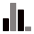
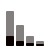

Charts¶
 Data¶
Data¶
Every layer may have some data associated with it. The “data” refers to a table of data where each row contains an observation and each column represents a variable that describes some property of each observation.
Data in this format is sometimes referred to as tidy data, flat data, primary data, atomic data, and unit record data.
You can pass tidy data to Lets-Plot in form of a Pandas Dataframe, a Polars Dataframe or just a dictionary: example notebook.
Basic Building Blocks¶
Points:
points,
jittered points
Lines:
line,
path,
diagonal line,
horizontal line,
vertical line,
segment,
step-function
Areas:
area,
ribbon
Polygons:
polygon,
map
Tiles:
tiles,
rectangles,
raster plot
Text:
text,
label
Examples:

Discrete¶bar,
pie,
lollipop,
boxplot
Examples:

Ordering Categories,as_discrete()¶
as_discrete()
Learn more: Function as_discrete().
Examples:
Contours¶
contours,
filled contours
Examples:
Visualization of Distribution¶
histogram,
density,
dotplot,
ydotplot,
violin,
ridgeline,
frequency polygon
Examples:
Marginal Plots¶
ggmarginal
Examples:
Visualization of Errors¶
crossbar,
errorbar,
linerange,
pointrange
Examples:
Smoothing¶
smoothing line
Examples:
Bivariate Distribution¶
2d bins,
2d density,
filled 2d density
Examples:
Time Series¶
scale_x_datetime(),
scale_y_datetime(),
scale_x_time(),
scale_y_time()
Examples:
Images¶
geom_imshow(),
matrix of images
Examples:
Facets¶
facet_grid(),
facet_wrap()
Examples:
Coordinate Systems¶
coord_cartesian(),
coord_fixed(),
coord_flip(),
coord_map()
Examples:
‘bistro’ Plots¶
Exploratory Data Analysis (EDA) is an open-ended, highly interactive, iterative process, whose actual steps are segments of a stubbily branching, tree-like pattern of possible actions.
Learn more about instruments for EDA in Lets-Plot: ‘bistro’ Plots.
GeoPandas Shapes¶
GeoPandas GeoDataFrame is supported by the following geometry layers: polygon, map, point, pie, text, path, rect.
Learn more: GeoPandas Support.
Examples:
 Grouping Plots¶
Grouping Plots¶
GGBunch and gggrid shows a collection of plots on one figure.
Examples:
Presentation Options¶
theme(),
ggtitle(),
ggsize(),
xlab(),
ylab(),
labs(),
guide_legend(),
guide_colorbar()
Predefined themes:
minimal2,
bw,
grey,
classic,
light,
minimal,
none


Color schemes (flavors):
darcula,
solarized light,
solarized dark,
high contrast light,
high contrast dark

Examples:
Cookbooks¶
Resources¶
Examples¶


Key Features¶
ggplot2-like API
A bridge between R (ggplot2) and Python Data visualization.
Customizable Tooltips
You can customize the content, values formatting and appearance of tooltip for any geometry layer in your plot. Learn more.
Formatting
Lets-Plot supports formatting of numeric and date-time values in tooltips, legends, on the axes and text geometry layer. Learn more.
Kotlin API
R, Python, what’s next? Right. Lets-Plot Kotlin API enables data visualization in JVM and Kotlin/JS applications as well as in scientific notebooks like Jupyter and Datalore.
Sampling
Sampling is a special technique of data transformation, which helps to deal with large datasets and overplotting. Learn more.
Export to SVG, HTML and PNG
The ggsave() function is an easy way to export plot to a file in SVG, HTML or PNG formats. Learn more.
Interactive Maps
Interactive maps allow zooming and panning around your geospatial data with customizable vector or raster basemaps as a backdrop. Learn more.
‘No Javascript’ and Offline Mode
In the ‘no javascript’ mode Lets-Plot generates plots as bare-bones SVG images. Plots in the notebook with option offline=True will be working without an Internet connection. Learn more.